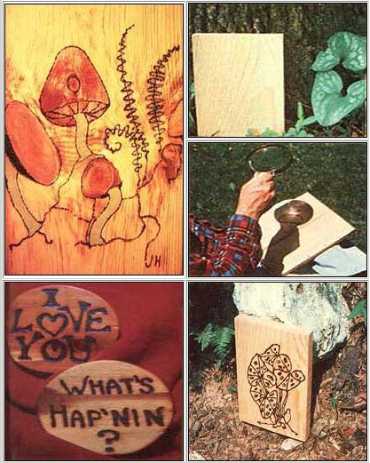

PHOTOS BY JIM AND MELANIE HARLESS
CLOCKWISE FROM UPPER RIGHT: Pencil a sketch on a light -colored piece of wood.. then-using a hand-held magnifying glass-focus the sun's rays on your outline.... Move the lens along, sun-burning your masterpiece.....And-with the addition of some varnish and perhaps enamel paint-your solar artwork will be complete.